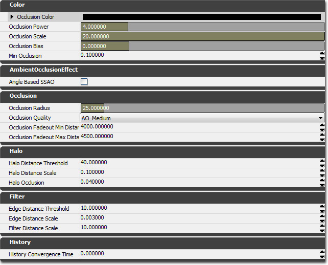
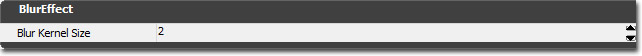
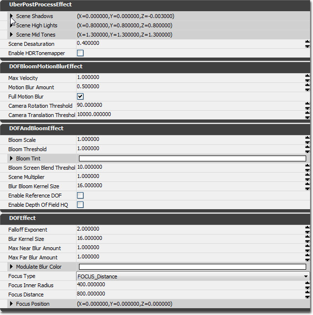

UDN
Search public documentation:
PostProcessEffectReferenceJP
English Translation
中国翻译
한국어
Interested in the Unreal Engine?
Visit the Unreal Technology site.
Looking for jobs and company info?
Check out the Epic games site.
Questions about support via UDN?
Contact the UDN Staff
中国翻译
한국어
Interested in the Unreal Engine?
Visit the Unreal Technology site.
Looking for jobs and company info?
Check out the Epic games site.
Questions about support via UDN?
Contact the UDN Staff
UE3 ホーム > ポストプロセス エフェクト > ポストプロセス エフェクト リファレンス
ポストプロセス エフェクト リファレンス
概要
一般的な設定項目 (PostProcessEffect)
 ポストプロセス エフェクト
ポストプロセス エフェクト
- Show In Editor (エディタで表示) - bShowInEditor プロパティは、すべてのノードに共通しています。インゲームの表示同様、エディタのビューポートにおける表示を切り替えることができます。リアルタイムの視覚化に役立つことがありますが、モーションブラーや被写界深度などをともなって有効なままにしておくと、ワークフローの妨げになることがあります。
- Show In Game (ゲームで表示) - インゲームで当該エフェクトを適用するか否かを制御します。ポストプロセス チェーンにおいて、特定のアクションの時に限って有効にすべきエフェクトが多数ある場合にしばしば有用になります。
- Use World Settings (ワールド設定値を使用) - これにチェックが入っていない場合は、当該のポストプロセスの値は、ポストプロセス チェーンにあるエフェクトのデフォルト値を用います。これにチェックが入っている場合は、現在のレベルの WorldInfo か、プレイヤーの周りにある現在のポストプロセス ボリュームのポストプロセス 設定値が、このエフェクトをオーバーライドします。 WorldInfo のポストプロセス設定項目にアクセスするには、View (ビュー) -> World Properties (ワールド プロパティ) -> WorldInfo-> DefaultPostProcessSettings (デフォルト ポストプロセス設定項目) と進みます。
- Effect Name (エフェクト名) - エフェクトの名前です。
- Scene DPG (シーン DPG) - エフェクトが入っている深度優先グループ (DPG) です。デフォルトのあらゆるポストプロセス エフェクトについて、この値は SDPG_PostProcess に設定されていなければなりません。ただし、ユーザー作成のマテリアルエフェクトについては、この値を変更すると有益なことがあります。
AmbientOcclusionEffect

カラー オクルージョン係数が計算された後に、0-1 の範囲に収まります。必要な部分だけを暗くし、エフェクトによってシーン全体を暗くならないようにするには、輝度とコントラストの調整が必要になります。- Occlusion Color (オクルージョンカラー) - オクルージョンの量が多い場合に、シーンカラーの代わりとなるカラーです。
- Occlusion Power (オクルージョン パワー) - 計算されたオクルージョン値に適用するパワー (累乗) です。パワーが大きくなるとコントラストが強くなります。
- Occlusion Scale (オクルージョン スケール) - 計算されたオクルージョン値に適用するスケールです。残念ながら、OcclusionPower と OcclusionScale が連結しているため、一方を変更した場合は、もう一方を調整してオクルージョンを適正な値に戻す必要があります。
- Occlusion Bias (オクルージョン バイアス) - 計算されたオクルージョン値に適用するバイアスです。
- Min Occlusion (最小オクルージョン) - 他のすべての変形が適用された後の最小オクルージョン値です。暗い部分を「暗くなりすぎる」のを防ぐ場合に有効です。
- Angle Based SSAO (角度ベースの SSAO (スクリーン空間環境光オクルージョン)) - TRUE の場合は、角度ベースの環境光オクルージョンが使用されることによって、クオリティの改善およびノイズの現象、ディテールの増加、平らなサーファスの暗化防止、凸面部の過剰輝度防止が可能になります。この設定項目を有効にした場合は、他の設定項目を再調整しなければならないことがあります。
- Occlusion Radius (オクルージョン半径) -各ピクセルを中心としてチェックする、オクルーダのための距離です。単位は、ワールド単位です。 この設定項目はパフォーマンスに影響を与えます。 設定値が小さいとより速くなります。
- Occlusion Quality (オクルージョンのクオリティ) - 環境光オクルージョン エフェクトのクオリティです。 この設定項目はパフォーマンスに影響を与えます。 クオリティが Low (低い) 場合は、パフォーマンスが最善となりゲームプレイに適しています。 Medium (中程度) のクオリティにすると、フレーム間のノイズが緩和されますが、若干パフォーマンスコストが上昇します。High (高) クオリティにすると、ダウンサンプルが行われないため、非常に高い周波数ノイズが発生します。
- Occlusion Fadeout Min Distance (オクルージョン フェードアウト最小距離) - オクルージョン係数がフェードアウトし始める距離です。単位は、ワールド単位です。スカイボックス上にある遠方のアーティファクトを隠すのに有用です。
- Occlusion Fadeout Max Distance (オクルージョン フェードアウト最大距離) - オクルージョン係数が完全にフェードアウトする距離です。単位は、ワールド単位です。
- Halo Distance Threshold (ハロー距離閾値) - 異なるオブジェクトとして認識されるためにオクルーダがピクセルの前から離れていなければならない距離です。単位は、ワールド単位です。この閾値は、近くのオブジェクトを中心としたハロー域を認識するために使用されます。(例 : 一人称の武器)。
- Halo Distance Scale (ハロー距離スケール) - 遠方のピクセルのために、HaloDistanceThreshold を大きくするスケール係数です。値が .1 の場合、10 ワールド単位の距離で HaloDistanceThreshold が 1 単位大きくなります。
- Halo Occlusion (ハローオクルージョン) - ハローに寄与すると決定されたサンプルに対して割り当てるオクルージョン係数です。値が 0 の場合は、そのサンプルのためのオクルージョンが最大になり、増加する値が、2 次的に減少するオクルージョン値にマッピングします。
- Edge Distance Threshold (エッジ距離閾値) - 2 つのピクセルがエッジとして見なされる (したがって、その間でブラーされない) ために必要な深度の差です。単位は、ワールド単位です。
- Edge Distance Scale (エッジ距離スケール) - 遠方のピクセルのために、EdgeDistanceThreshold を増加させるスケール係数です。値が .001 の場合は、1000 ワールド単位の距離で EdgeDistanceThreshold が 1 単位大きくなります。
- Filter Distance Scale (フィルターの距離スケール) - スクリーン空間のカーネルサイズにマッピングされるワールド空間の距離です。遠方のピクセルのためにフィルターのカーネルサイズを小さくするとともにディテールを保持する場合に有効です。ただし、より多くのノイズが結果として残ります。
- History Convergence Time (履歴収束時間) - オクルージョン履歴がおよそ収束するまでの時間です。時間が長ければ (.5秒)、フレーム間でよりスムージングされてノイズが減りますが、履歴ストリーキングが目立つようになります。
バージョン
このエフェクトは、 2007年12月の QA ビルド において初めて導入されました。追加設定項目は、 2008年2月の QA ビルド において追加されました。ビジュアル化モード
これらの設定項目を調整する場合、以下のビジュアル化モードが役立ちます。設定項目の中には、非常に微細なエフェクトを生じさせるものがあるため、オクルージョンの項目を単独で表示させることによって、その動作を確認する必要があります。 環境光オクルージョンがシーンに与える影響度を調整するには 2 つの表示フラグがあります。- エディタ Viewport options/Show/Post Process Flags/Screen Space Ambient Occlusion [ビューポートオプション / 表示 / ポストプロセス フラグ / スクリーン空間環境光オクルージョン] (コンソールコマンドの show SSAO (以前は ToggleAO というコンソールコマンド) を使用してインゲームで切り替えることができます)。
- エディタ Viewport options/Show/Post Process Flags/Visualize Screen Space Ambient Occlusion [ビューポートオプション / 表示 / ポストプロセス フラグ / スクリーン空間環境光オクルージョンのビジュアル化] (コンソールコマンドの show VisualizeSSAO (以前は ToggleScene というコンソールコマンド) を使用してインゲームで切り替えることができます)。
 つぎは、環境光オクルージョンを使用している同一のシーンです。
つぎは、環境光オクルージョンを使用している同一のシーンです。
 つぎは、環境光オクルージョン ビジュアル化モードを使用した同一シーンです。このモードを使用すると、どのように機能しているかが非常に分かりやすくなります。ただし、すでに有効にしてあるブルームエフェクトはすべて無効にしなければなりません。そうでなければ、ビジュアル化が損われてしまいます。
つぎは、環境光オクルージョン ビジュアル化モードを使用した同一シーンです。このモードを使用すると、どのように機能しているかが非常に分かりやすくなります。ただし、すでに有効にしてあるブルームエフェクトはすべて無効にしなければなりません。そうでなければ、ビジュアル化が損われてしまいます。

BlurEffect

BlurEffect によって、ガウス ブラーがフル解像度のシーンカラーに適用されます。コンソールのために最適化されてはいませんが、高解像度のプレ レンダリングされたシネマティックスをソフトにするのに便利です。 ブラーエフェクト- BlurKernelSize (ブラーカーネルサイズ) - シーンカラーをブラーするための、ブラーのカーネル半径です。単位はピクセルです。サポートされている最小のブラーは 1 です。その場合、当該ピクセルの各側面にあるピクセル 1 個が、ブラー中の評価対象となります。最大は 15 です。
バージョン
このエフェクトは、2009年7月の QA ビルドで初めて導入されました。UberPostProcessEffect (超ポストプロセス エフェクト)

UberPostProcessEffect (超ポストプロセス エフェクト) は以下を実行します。被写界深度、カラーグレーディング、トーンマッピング、モーションブラー、ブルーム、イメージ粒子。 これらは 1 つのノードに入れられることによって、レンダリング効率が高められています。 これらのパラメータは、以下の式によってシーンをトーンマッピングする際に使用されます。Color0 = ((InputColor - SceneShadows) / SceneHighLights) ^ SceneMidTones Color1 = Luminance(Color0) OutputColor = Color0 * (1 - SceneDesaturation) + Color1 * SceneDesaturationシーンカラー
- SceneShadows (シーンシャドウ) - このプロパティは、黒にマッピングされるカラーを制御します。シーン内にあるカラーの RGB 値のいずれかがこのプロパティで指定されている RGB 値よりも低い場合、0 すなわち黒に変換されます。
- SceneHighlights (シーンハイライト) - このプロパティは、白にマッピングされるカラーを制御します。シーン内にあるカラーの RGB 値のいずれかがこのプロパティで指定されている RGB 値よりも高い場合、1 すなわち白に変換されます。
- SceneMidTones (シーン中間トーン) - このプロパティはガンマカーブを制御します。基本的には、SceneShadows (シーンシャドウ) および SceneHighlights (シーンハイライト) のマッピングが行われた場合に、シーン内のコントラスト量を決定するものです。
- SceneDesaturation (シーンデサチュレーション) - デサチュレーションするシーンカラーの量を指定します。値が 1.0 の場合は、デサチュレーションが最大となり、シーンがグレースケールで表示されます。
- ToneMapper Type (トーンマッパ タイプ) - レンダリングされた HDR カラーを、スクリーン上に表示される LDR カラーに変換する方法を指定します。Off は、最速のオプションですが、明るい色がクランプ (固定) され、不快な色飛びが生じる場合があります。 Filmic (映画的) メソッドは、妥当なパフォーマンスコストに調整することができます。また、映画的な外観にするために望ましいコントラストを追加します。Custom (カスタム) メソッドは、少しばかりパフォーマンス負荷が高くなりますが、Toe Factor (トウ係数) プロパティによってコントラスト強調部分を調整することができます。この名前は、HDR LDR 変換関数の最下部のことを表しています。
- Max Velocity (最大速度) - 最大速度量です。これによってブラー量が効果的にクランプされます。
- Motion Blur Amount (モーションブラー量) - 適用するブラーをスケーリングします。
- Full Motion Blur (最大モーションブラー) - TRUE の場合は、あらゆるもの (静的 / 動的オブジェクト) がブラーします。 TRUE でない場合は、動いているオブジェクトのみがブラーします。
- Camera Rotation Threshold (カメラ回転閾値) - モーション ブラーが無効になるためにカメラが単一フレーム内で回転しなければならない最小角度です。単位は度です。
- Camera Translation Threshold (カメラ平行移動閾値) - モーション ブラーが無効になるためにカメラが単一フレーム内で平行移動しなければならない最小距離です。単位はワールド単位です。
- Bloom Scale (ブルームスケール) - ブルームカラーに適用するスケールです。
- Bloom Threshold (ブルーム閾値) - ポストプロセスにおいてブルームに寄与する場合に必要となるピクセルカラーの成分 (R、G、B) の最小値をセットします。
- Bloom Tint (ブルーム調整) - ブルームカラーに乗じるカラーです。
- Bloom Screen Blend Threshold (ブルーム スクリーン ブレンド閾値) - 現在のピクセルが保有できて、なおかつ、ブルームに寄与できる最大のシーン カラー ルミナンス値を設定します。「Photoshop」のスクリーン ブレンド モードのように動作し、過度のサチュレーションによって明度がすでに高いエリアにブルームが追加されるのを防ぎます。
- Scene Multiplier (シーン乗算子) - シーンカラーのすべての読み込みに対して適用する乗算子です。
- Blur Bloom Kernel Size (ブラー ブルーム カーネルサイズ) - ブルームエフェクトの半径です。
- Depth Of Field Type (被写界深度のタイプ) - つぎから選択することができます。SimpleDOF (簡易 DOF。高速で、1/4 の解像度でガウスブラーを使用します)。ReferenceDOF (参照 DOF。ハイクオリティだが低速になりうるメソッド。ディスク形のボケ。リアルタイムのゲームには使用しません)。BokehDOF (ボケ DOF。ハイクオリティで、カスタムのボケ テクスチャを指定できます。D3D11 専用です)。
-
- SimpleDOF (簡易 DOF) 高速です。フォーカスされていない部分はガウスブラーに基づきます。1/4 解像度。コンソールに最適化されています。
- ReferenceDOF (参照 DOF) ハイクオリティです (最大解像度)。パフォーマンスはカーネルサイズに依存します。ゲームの出荷には最適化していません。
- BokehDOF (ボケ DOF) ハイクオリティです。カスタムのボケ テクスチャをサポートしています。詳細は このページ を参照してください。(! DirectX 11 専用です)。
- Bokeh Texture (ボケ テクスチャ)
- Depth of Field Quality (被写界深度クオリティ)
- Falloff Exponent (フォールオフ指数) - ブラー量がフォールオフする速度に影響を与えます。指数が 1 の場合は、フォールオフが線形になります。
- Blur Kernel Size (ブラーカーネルサイズ) - ブラーのために使用されるカーネルサイズです。単位はピクセルです。
- Max Near Blur Amount (最大 近ブラー量) - フォカースプレーンの前にあるオブジェクトに適用するブラー量の上限です。
- Max Far Blur Amount (最大 遠ブラー量) - フォカースプレーンの後ろにあるオブジェクトに適用するブラー量の上限です。
- Modulate Blur Color (ブラーカラーのモジュレート) - ブラーカラーに関してモジュレートされるカラーです。
- Focus Type (フォーカスタイプ) - フォーカスポイントの計算方法を指定します。
- FOCUS_Distance (フォーカス_距離) - 現在の視点からの距離を使用します。フォーカスポイントは現在の視点とともに移動します。
- FOCUS_Position (フォーカス_位置) - ワールド空間の位置を使用します。フォーカスポイントは、ワールド内の固定した位置となります。
- FOCUS_Distance (フォーカス_距離) - 現在の視点からの距離を使用します。フォーカスポイントは現在の視点とともに移動します。
- Focus Inner Radius (フォーカス内部半径) - フォーカスの半径です。フォーカス半径の中心点は常に焦点があっています。また、フォーカス量は、指定された FalloffExponent (フォールオフ指数) に依存しながら、フォーカス半径の端で最大ブラーまでフォールオフします。
- Focus Distance (フォーカス距離) - FOCUS_Distance が指定される時に使用されるフォーカスまでの距離です。
- Focus Position (フォーカス位置) - FOCUS_Distance が指定される時に使用されるフォーカスのワールド位置です。
マテリアル エフェクト
 マテリアル エフェクト
マテリアル エフェクト
- Material (マテリアル) - マテリアル エフェクトは、スクリーンにレンダリングされるパラメータとしてマテリアルを解釈します。通常、このマテリアルには SceneTexture (シーンテクスチャ) ノードが含まれます。現在のシーンをサンプリングし、他のマテリアル式と結合することによって、複雑なエフェクトを形成することができます。また、 SceneDepth (シーン深度) 式は、深度ベースのエフェクトのために、z バッファをサンプリングします。詳細は、 ポストプロセス マテリアル のページを参照してください。